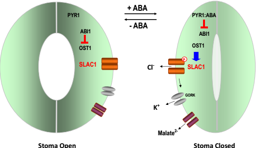

钙在人体占1.5~2%
骨骼、神经、细胞内
大部分钙在骨骼中（99%），血液中浓度约1mM，细胞内浓度在100nM和1~10μM之间波动，即一种信号。
钙离子信号的时空分布
不同离子有不同的结合倾向。
和一价离子比，钙离子结合力更强。
离子在水溶液中以水合的形式存在。
细胞器内的钙离子除了在控制钙离子的动态平衡方面发挥着作用，同时也可能调控细胞器功能。
所有S100都有类似的基本结构。S100的结构是唯一的。
S100蛋白的功能具有特异性
能够选择性通过钙离子的通道
X光是重要工具。
subunit composition of voltage-gated Ca2+ channels
通道上的β亚基 regulates Ca2+ channel expression
Crystal structure of β-AID complex
Interactions between β and AID
GK-AID interaction is responsible for surface trafficking and anchoring of β to α1
钠钾离子通道优雅的选择方式——同一个蛋白质在不同构想下结合不同的
Modulation of P/Q-type Ca2+ channels by Gβγ
modulation of Ca2+:the α1 interacting proteins
vesicle fusion: docking-priming-fusion
nicotinic acetylcholine receptor 烟碱乙酰胆碱受体
CRAC通道 Calcium Release-Activated Calcium Channel:STIM/Orai coupling machinerySTIM1是内质网上的钙离子感受器，Orai是人类T细胞的钙离子CRAC通道孔。
钙离子电压门控通道蛋白与RyR在T管上相互作用。
Ryanodine Receptor（RyR）: A Ca2+ Release Channel. Ryanodine is a kind of plant.
SR/ER Transmembrane Homeostasis
基因-蛋白质-结构-功能
Reception: Cell surface receptors bind to their ligands (signaling molecules) via their extracellular domains. 细胞表面的受体利用它们的细胞外结构结合它们的配体（信号分子）。
In all cases, binding causes a conformational change in the receptor that leads to the transmission of an intracellular signal. 在所有的情况中，结合都会导致受体的构想变化进而导致细胞内信号的传达。
结合的特异性取决于受体和配体的补足情况。一个受体可能识别一个特定的配体也可能识别一组结构类似的配体；一个配体可能和不同受体结合进而引发不同的效应。两个受体结合了不同的配体可能引发相同的细胞内信号转导系统，即使在一个细胞内。
蛋白质修饰极大地丰富了蛋白质功能。以人类为例：约21000个编码基因→100000转录本→10000000人类蛋白质。蛋白质通过磷酸化被激活。
一个简单的信号转导通路包括一个和受体结合的激酶与一个主要的目的蛋白。
GTPase是一大类水解酶，可以结合并水解GTP。
Guanine nucleotide-exchange factors (GEFs) promote exchange of GTP for GDP and activate GTPases. 激活GTPase。
GTPase-activating proteins (GAPs), stimulate the rate of GTP hydrolysis to GDP and inactivate GTPases. 抑制GTPase。
动物细胞中只发现了6种第二信使
作用
在许多信号转导通路的每一步，被激活的参与者数量都会增加。
生理反应和结合情况不严格对应。
GPCR是含有7个跨膜结构的必要膜蛋白。跨膜结构由3细胞内和3个细胞外螺旋连接。
人类由有21种不同的Gα蛋白，极大地丰富了功能。
结合cAMP释放子单位。
GPCR激活基因转录GPCR→cAMP→PKA
PLC将膜脂PIP2裂解成IP3和DAG
ABA控制气孔的开合。ABA使气孔关闭。
